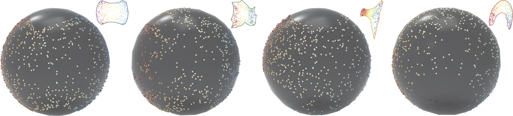
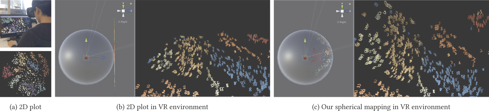

Mapping Two-Dimensional Plots to a Spherical Surface using Elliptical Grid Mapping
- 1 Japan Advanced Institute of Science and Technology
- 2 Tokyo University of Agriculture and Technology
- 3 L´École de Design Nantes-Atlantique
CVM 2020

Abstract
Visual cryptography (VC) is an encryption technique for hiding a secret image in distributed and shared images (referred to as shares). VC schemes are employed to encrypt multiple images as meaningless, noisy patterns or meaningful images. However, decrypting multiple secret images using a unique share is difficult with traditional VC. We propose an approach to hide multiple images in meaningful shares. We can decrypt multiple images simultaneously using a common share, which we refer to as a magic sheet. The magic sheet decrypts multiple secret images depending on a given share. The shares are printed on transparencies, and decryption is performed by physically superimposing the transparencies. We evaluate the proposed method using binary, grayscale, and color images.Results


Links
Acknowledgements
This work was supported by JSPS KAKENHI Grant number 19K24338.Bibtex
@article{KITA2020101067,
title = "Mapping two-dimensional plots to a spherical surface using elliptical grid mapping",
journal = "Graphical Models",
volume = "109",
pages = "101067",
year = "2020",
issn = "1524-0703",
doi = "https://doi.org/10.1016/j.gmod.2020.101067",
url = "http://www.sciencedirect.com/science/article/pii/S1524070320300126",
author = "Naoki Kita and Grégoire Cliquet and Kazunori Miyata",
keywords = "Mapping technique, Layout optimization, Data visualization, Virtual reality",
}